CS184/284A Fall 2026 Homework 1 Write-Up
Link to webpage: (TODO) cs184.eecs.berkeley.edu/fa26
Link to GitHub repository: (TODO) cs184.eecs.berkeley.edu/fa26

Overview
This assignment builds a software rasterizer from the ground up. Given a triangle mesh in screen space, decide which pixels it covers and what color to put there. I started with the simplest possible version (fill a pixel if its center is inside the triangle), then layered on the pieces that turn it into something closer to a real renderer. Pieces like supersampling to antialias rough edges, reusable parts, barycentric interpolation to blend per-vertex data smoothly across a triangle's interior, and texture mapping with both pixel sampling and level sampling to keep textured surfaces looking correct whether they're magnified or minified on screen. The thing that stuck with me most is how much of this process depends on the triangle edge function. The same three numbers I compute for the point-in-triangle test turns out to also be a triangle's barycentric weights, which is also exactly what I need to interpolate texture coordinates and to estimate a texture's on-screen footprint for mipmap level selection. I also gained a more concrete sense of aliasing as one problem that shows up at multiple different scales with different fixes. Undersampling a triangle's edge is fixed by supersampling in screen space, while undersampling a texture's detail when it's minified needs sampling in a completely different domain because no amount of extra screen-space samples can recover detail the texture itself doesn't have. Seeing the exact same problem require two structurally different solutions was an interesting concept.
Task 1: Drawing Single-Color Triangles
rasterize_triangle takes the three vertices of a triangle, finds lines between them, and fills in every pixel that the triangle covers. The first step is to find the triangle's bounds by taking the min and max of the three vertex x and y-coordinates for the box's horizontal and vertical line, then bound the box to the framebuffer's own bounds. For each candidate pixel, I sample its center and run a point-in-triangle test using three edge functions. An edge function is positive on one side of the directed edge and negative on the other. A point is inside the triangle when all edges have the same sign. If a sample passes the test, I call fill_pixel to write the triangle's color into that pixel.
The bounding box is the smallest axis-aligned rectangle containing the triangle, so any pixel outside it cannot overlap the triangle. A bounding-box-only algorithm and my algorithm both skip those pixels for free, so both are just as effective. Within the bounding box, both algorithms perform the same amount of work per pixel, three edge-function evaluations followed by a conditional fill. So the two run in the same asymptotic and practical time, O(w x h) for a bounding box of width w and height h, which is strictly better than the O(W * H) of scanning the entire framebuffer whenever the triangle is small relative to the canvas.
|
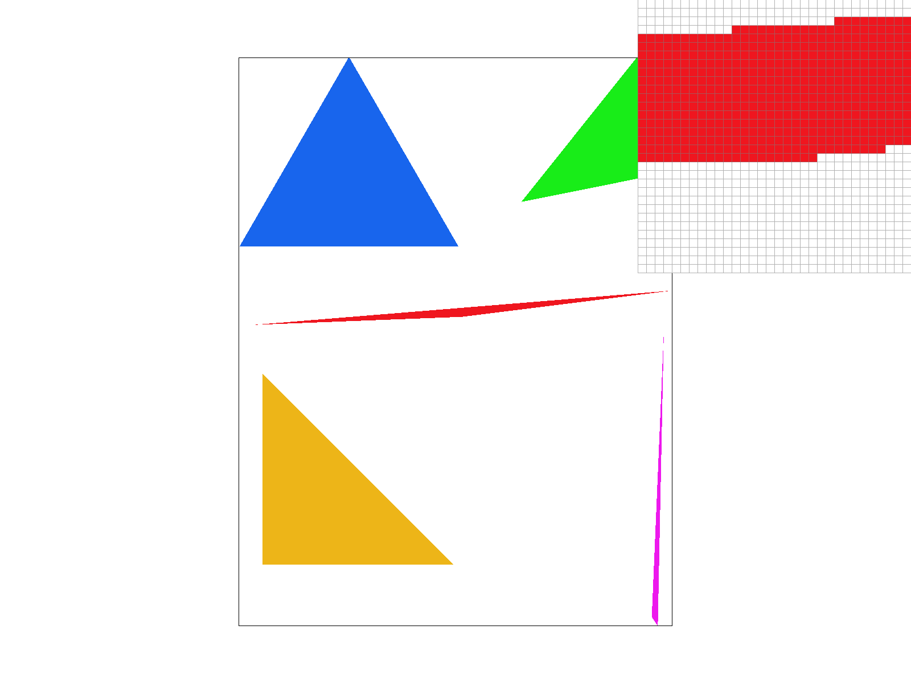 |
Task 2: Antialiasing by Supersampling
Task 1's rasterizer takes one sample per pixel, at the pixel's center. A pixel is either in the triangle or out, so a diagonal or curved edge gets approximated by a staircase of fully-colored pixels. Supersampling fixes this by asking the same in or out question at many points inside each pixel and averaging the results. A pixel that's covered by the triangle ends up mostly the triangle's color with the some of the background blended in, rather than all-or-nothing decision.
Before, fill_pixel wrote directly into one Color per pixel. To supersample, each pixel now needs to remember multiple samples until they're averaged down. I widened sample_buffer from width * height entries to width * height * sample_rate entries. For a pixel (x, y), its samples live contiguously starting at index (y * width + x) * sample_rate. Within that block, I arrange the samples as a sqrt_rate * sqrt_rate regular grid covering the pixel's area. This buffer has to be resized whenever sample_rate changes or the window is resized, so set_sample_rate and set_framebuffer_target always resize to the current width * height * sample_rate.
rasterize_triangle now loops over each pixel in the bounding box, and for each pixel, it loops over its sqrt_rate * sqrt_rate grid, running the same point-in-triangle testat each sub-sample's location and writing the color into sample_buffer if it's inside. Points and lines don't get antialiased, but they still have to fill every slot of their pixel's block or they'd get overwritten by stale samples from a previous frame, so fill_pixel writes the same color into all sample_rate slots of the target pixel. resolve_to_framebuffer now averages each pixel's block of samples before converting to the framebuffer format.
|
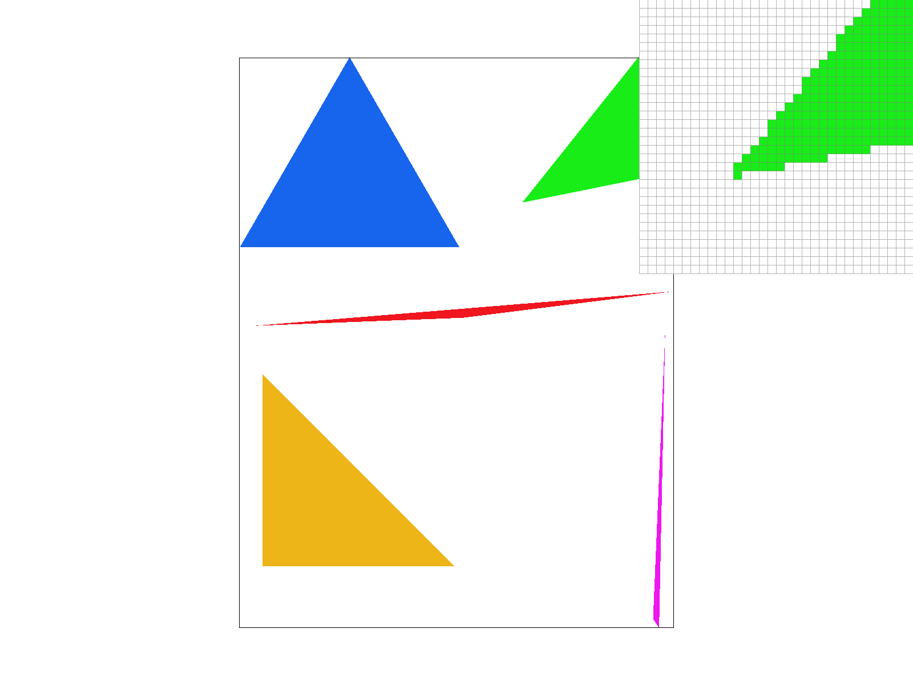 |
|
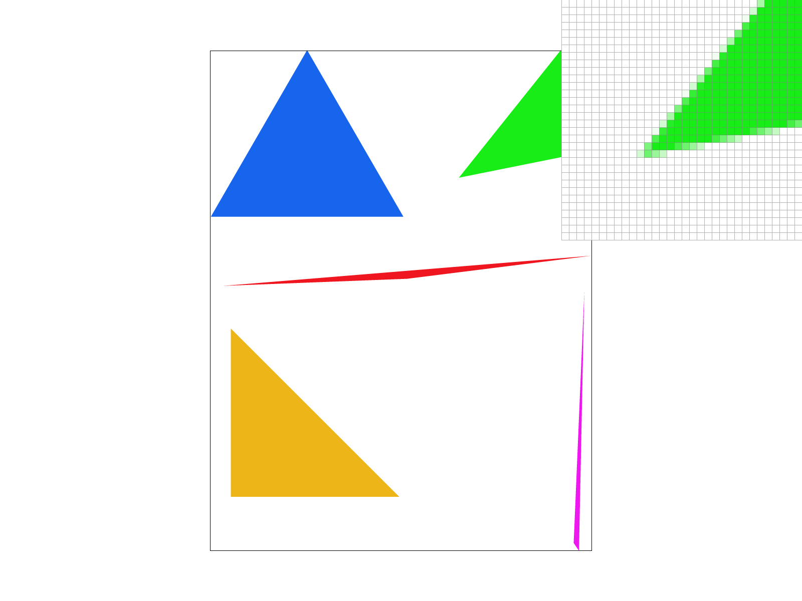 |
basic/test4.svg, default viewing parameters, pixel inspector centered on the sharp tip of the green triangle.
At sample rate 1 the sharp corner is built from whichever pixels happen to have their single center sample fall inside the triangle. The tip looks like a jagged, uneven staircase, and skinny corners can even miss a pixel where the true tip lies. At rate 4, each pixel is deciding in/out at 4 sub-pixel locations instead of 1, so a pixel straddling the edge now shows a blend instead of an all-or-nothing jump. At rate 16, the same edge has 16 possible coverage levels per pixel, so the transition from full color to background is a much smoother gradient. More samples per pixel means a finer estimate of how much the triangle actually.
Task 3: Transforms
I implemented translate, scale, and rotate as the standard 3x3 matrices, so that a 2D point (x, y) is first (x, y, 1), transformed, and then projected back down by dividing by the w coordinate. translate(dx, dy) is the identity matrix with dx/dy in the last column, so it adds a constant offset to every point. scale(sx, sy) is a diagonal matrix that multiplies x by sx and y by sy. rotate(deg) converts degrees to radians and builds the counter-clockwise rotation matrix in the top-left 2x2 block I posed my robot waving: his right leg is kicked forward and bent at the knee as if hes walking and his right arm is raised up and bent into a wave, with his head tilted slightly. I recolored him blue with the head and waving arm orange to contrast.
|
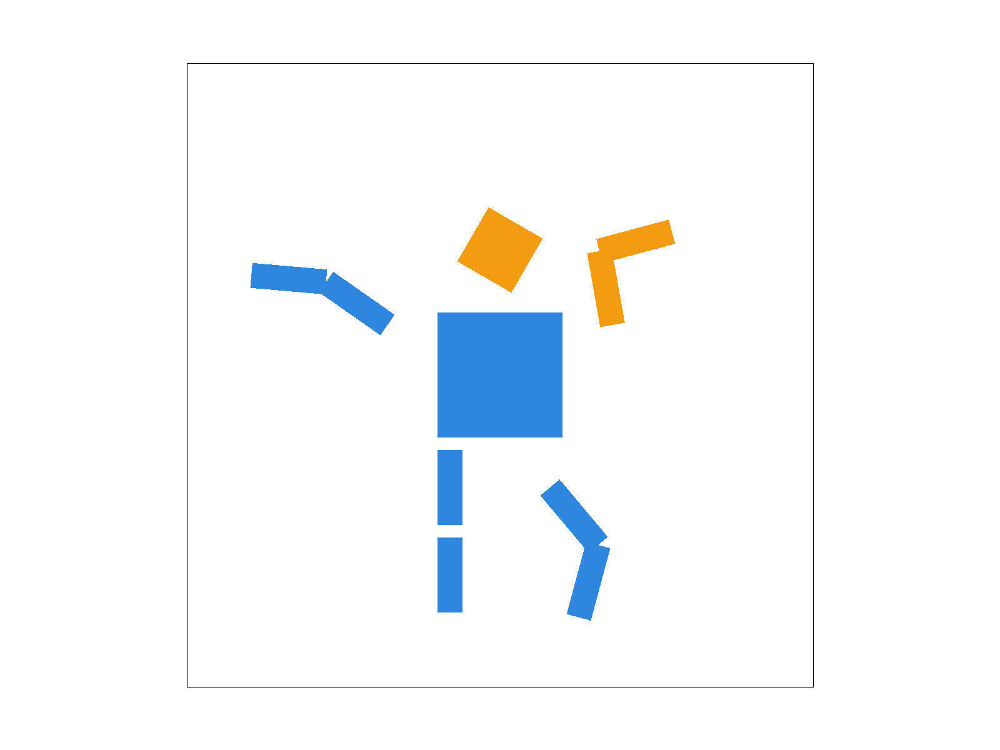 my_robot.svg, default viewing parameters. |
Task 4: Barycentric coordinates
Barycentric coordinates describe a point inside a triangle as a weighted combination of the triangle's three vertices. Given a triangle with vertices v0, v1, v2,
any point P in the plane can be written as P = w0*v0 + w1*v1 + w2*v2 where the weights sum to w0 + w1 + w2 = 1. Each weight measures how close P is to vertex, such that
wi equals the fractional area of the sub-triangle formed by P and the other two vertices, divided by the whole triangle's area. These weights are computed
directly from the same edge functions used for the point-in-triangle test since the barycentric weights fall out as wi = ei / (e0+e1+e2)
with no extra work beyond the inside test I already had. In rasterize_interpolated_color_triangle, these weights are used to blend the three vertex colors at every sample point which
produces a smooth gradient across the triangle's interior instead of a single flat color.
|
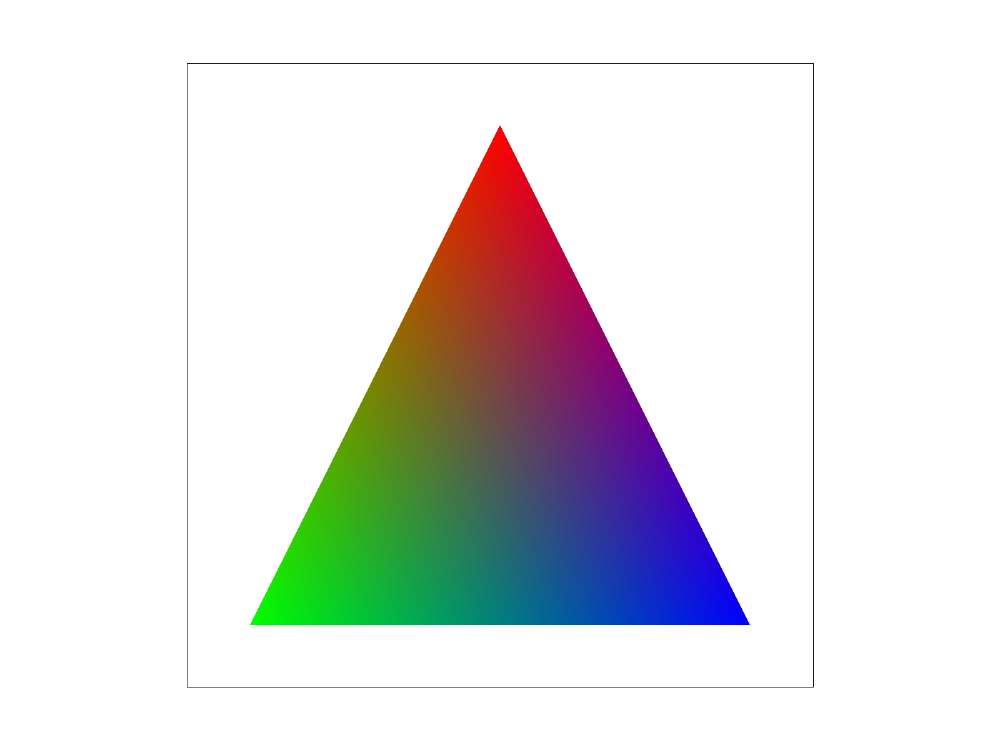 |
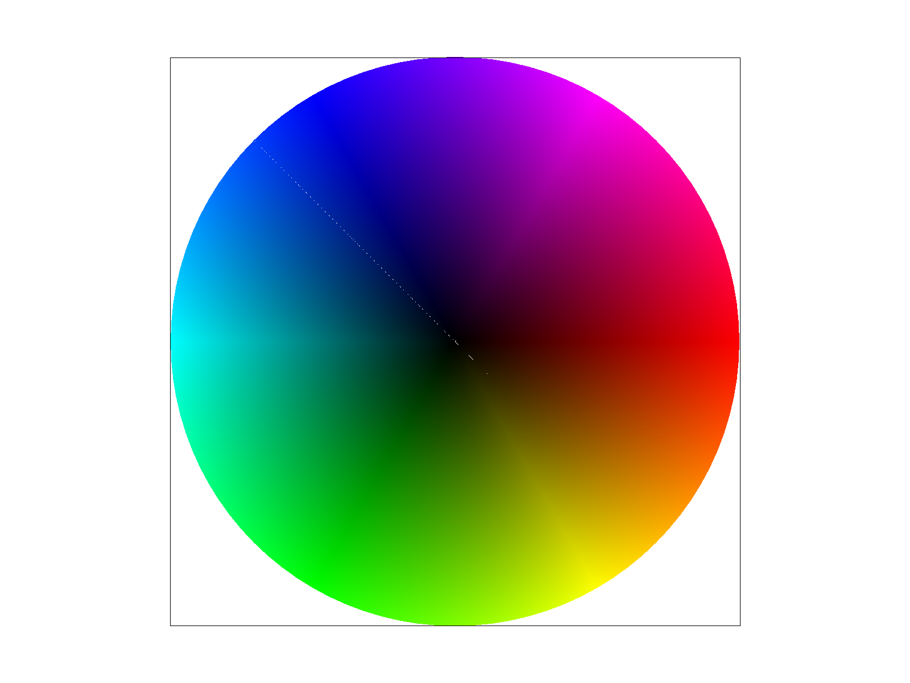 |
Task 5: "Pixel sampling" for texture mapping
A textured triangle's vertices carry texture coordinates in addition to their screen position. For every screen-space sample point it computes barycentric weights, so I use those same weights to interpolate across the triangle. Pixel sampling is turning that continuous (u,v) into an actual RGB color read from the discrete grid of texels. Nearest-neighbor sampling is the simple option. We convert (u, v) to texel coordinates, floor them to the containing integer texel, clamp to the texture's bounds, and return that single texel's color unmodified. It's cheap, but since it snaps to whichever texel the sample happens to fall in, magnifying a texture with nearest sampling shows the texture's pixel grid. Bilinear sampling instead looks at the four texels surrounding the sample point, and linearly blends them fractional x-distance and y-distance as the blend weight. This produces a continuous color field across the texture at the cost of 4 texel lookups and a few multiply-adds.
|
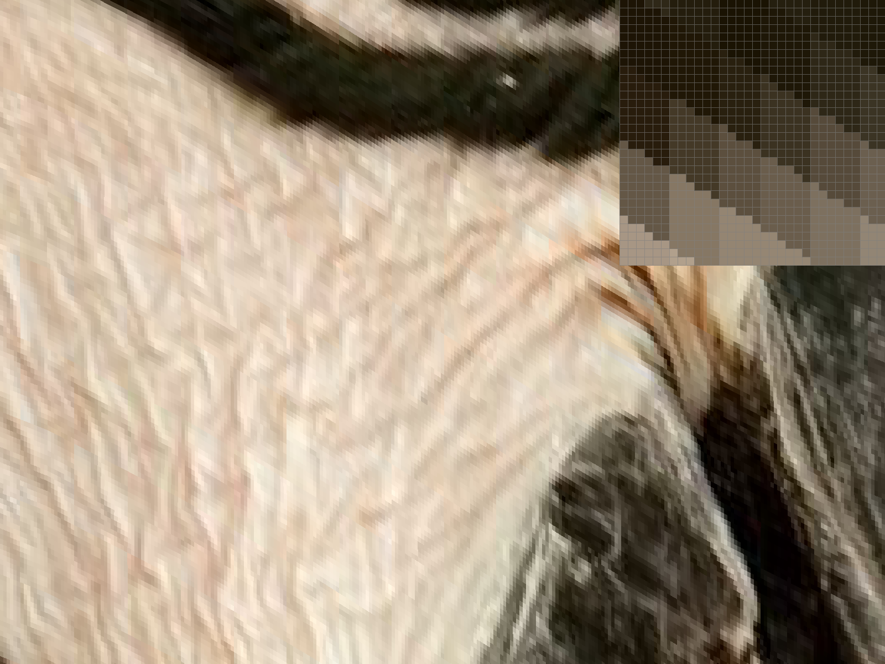 |
|
|
|
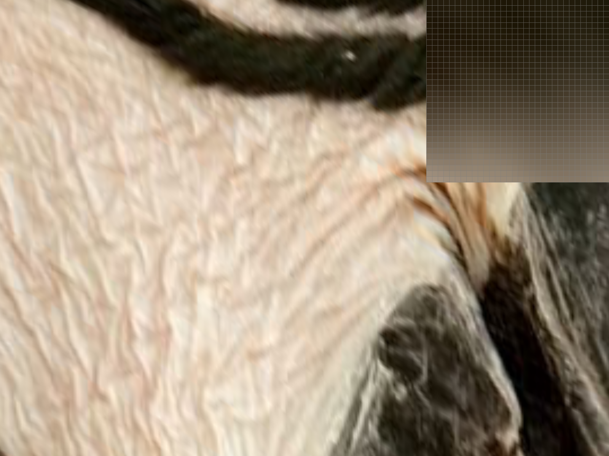 |
The difference between nearest and bilinear is where the texture is magnified. Nearest sampling reproduces the texture's pixel grid as visible hard-edged blocks, while bilinear sampling blends between texels and looks smooth. The two methods converge, though, when the texture is minified or roughly 1:1 with the screen. Supersampling antialiases triangle edges by resolving the in/out coverage test at more sub-pixel locations, but it does nothing to fix blockiness that comes from a triangle's interior, so nearest sampling still looks nearest at 16 samples/pixel.
Task 6: "Level Sampling" with mipmaps for texture mapping
When a texture is minified, sampling just one or four texels per pixel throws away most of the texture's high-frequency detail in that pixel's footprint, and the result is
aliasing rather than the smooth blur a properly antialiased minified image should have. A Texture stores a mipmap: a chain of progressively half-sized, pre-blurred copies of the
original image. Level sampling is choosing which mip level to sample from at each pixel, based on how minified the texture is at that pixel, so that one texel in the chosen
mip level roughly corresponds to one screen pixel.
(u, v) changes as we move one pixel across the screen. In rasterize_textured_triangle, since (u, v) is an affine function of screen position,
it is evaluated at the triangle's pixel-grid origin and one pixel over in x and y, and pass the differences in a SampleParams struct. It then converts each (du, dv)
difference into texel units by scaling by the full-resolution texture's width/height, takes the larger of the two resulting step lengths, and returns log2 of that length. It then dispatches on lsm:
L_ZERO always uses level 0, L_NEAREST rounds the computed level to the nearest integer mip and samples from it,
L_LINEAR samples from both of the two integer levels surrounding the computed level and linearly blends them by the fractional part.
Tradeoffs: nearest sampling is one texel lookup and looks blocky when magnified; bilinear is four lookups (a small, constant amount more memory bandwidth and arithmetic) and looks smooth when magnified, but neither helps with minification aliasing on its own. The mipmap chain itself only costs about 33% more memory than the base texture alone, so memory is a minor factor next to the per-sample lookup cost. Additive cost: whatever a single sample costs under a given (psm, lsm) combination, that cost is paid sample_rate times per pixel, on top of it.
|
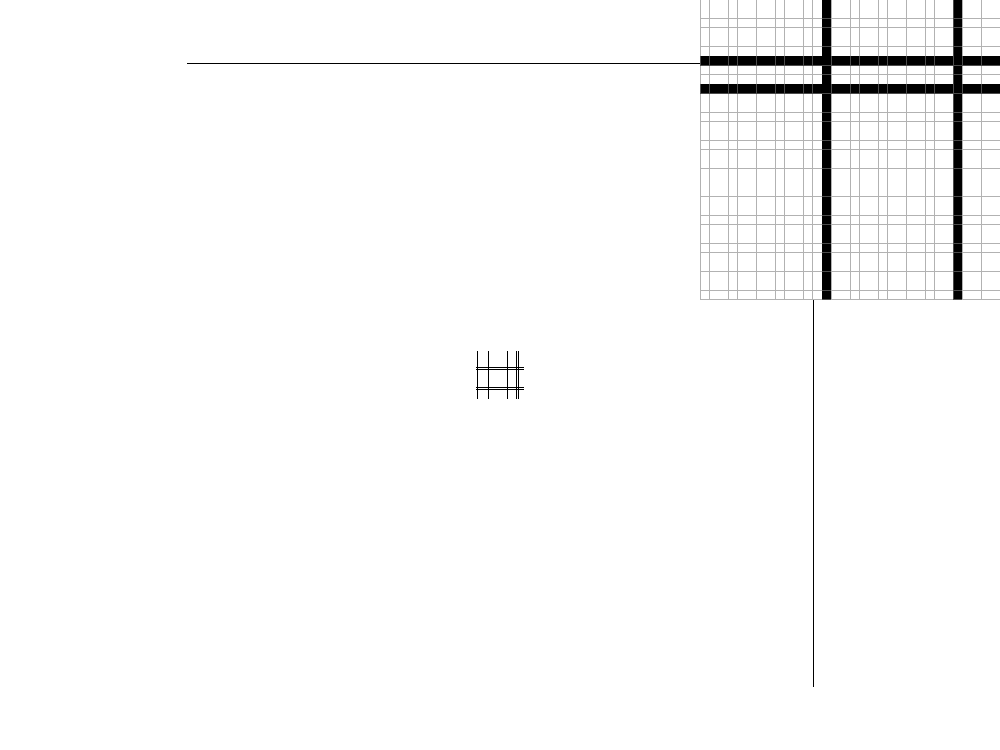 |
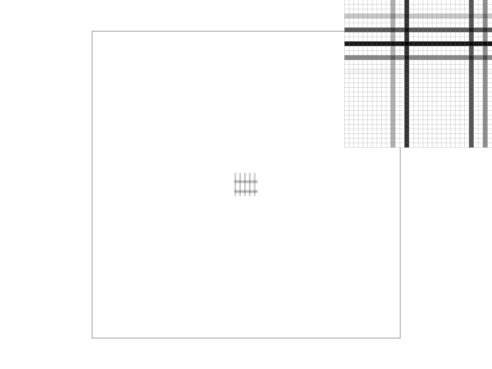 |
|
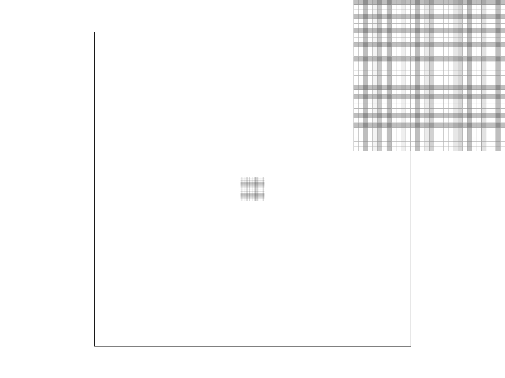 |
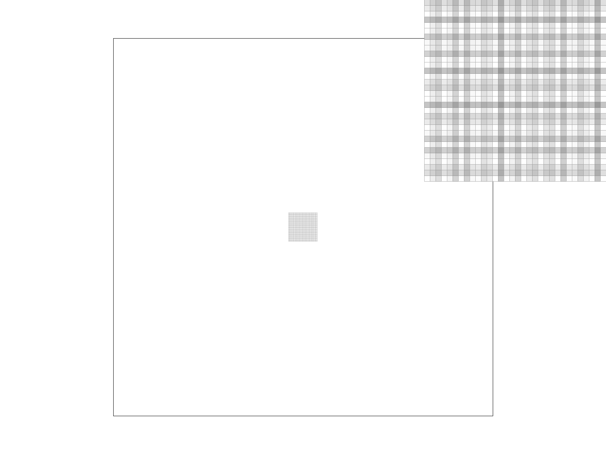 |